Rapid Prototyping, Day TWO
Mick McQuaid
2022-09-01
Day TWO
Recap
design thinking exercise
The built-in iOS Notes app
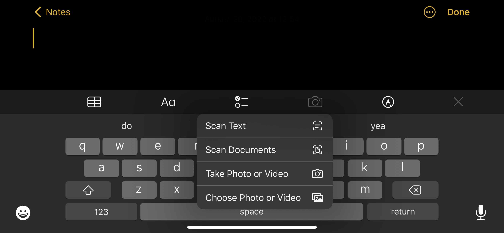List of needs
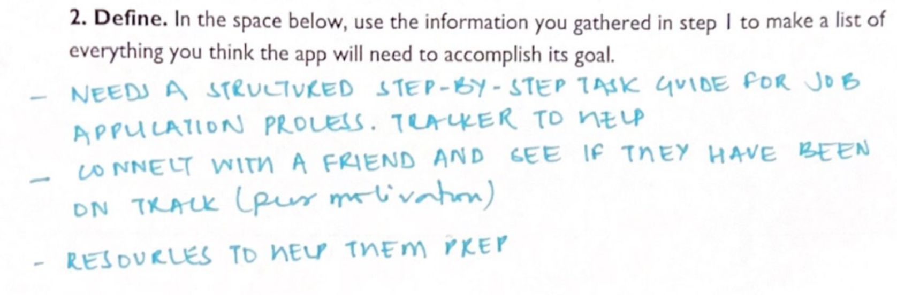Storyboard
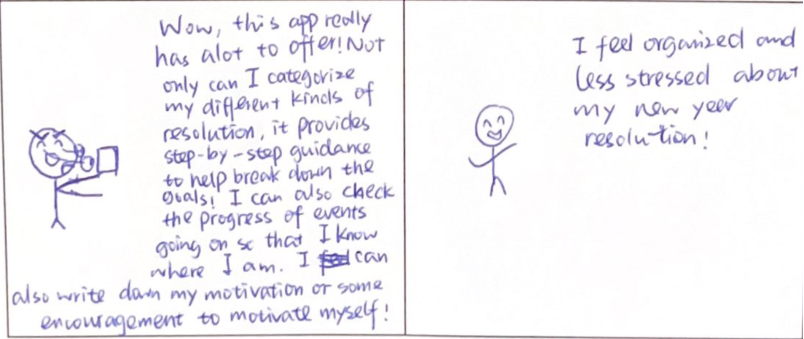Screens
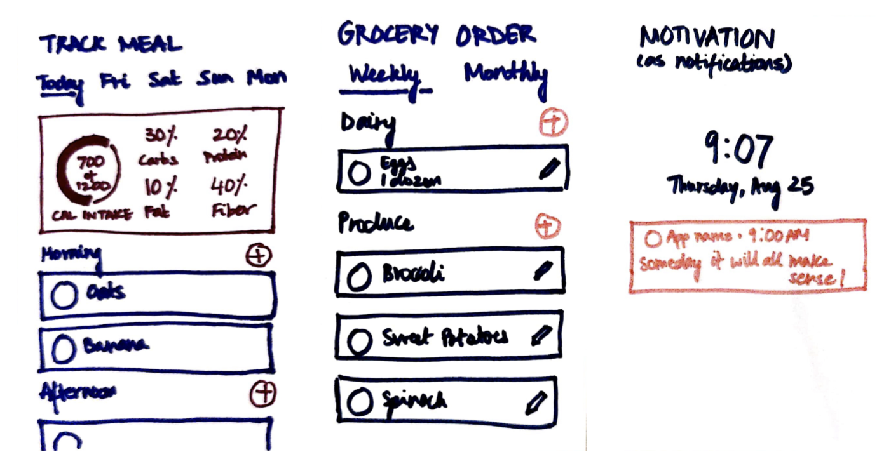design challenge 1
Still You Bloom in This Land of No Gardens
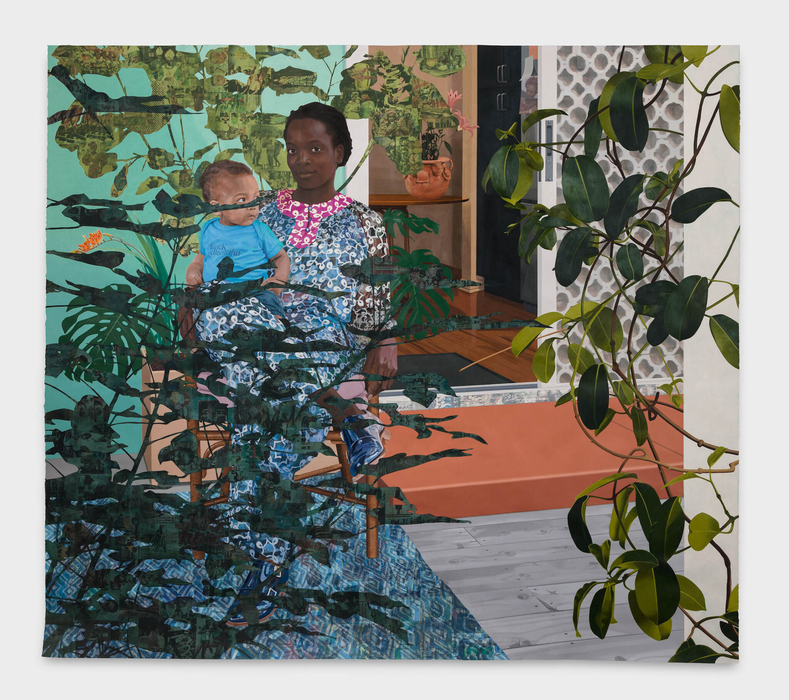Story Mapping
A basic story map
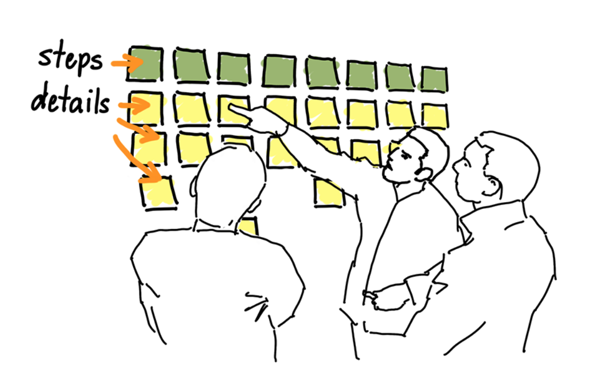Giving instructions doesn’t always go well
Here are some instructions
Customer: Hello, I’d like to order a cake.
Employee: Sure, what would you like written on it?
Customer: Could you write “So long, Alicia” in purple?
Employee: Sure.
Customer: And put stars around it?
Employee: No problem. I’ve written this up, and will hand it to my cake decorator right away. We’ll have it for you in the morning.
And here is the result
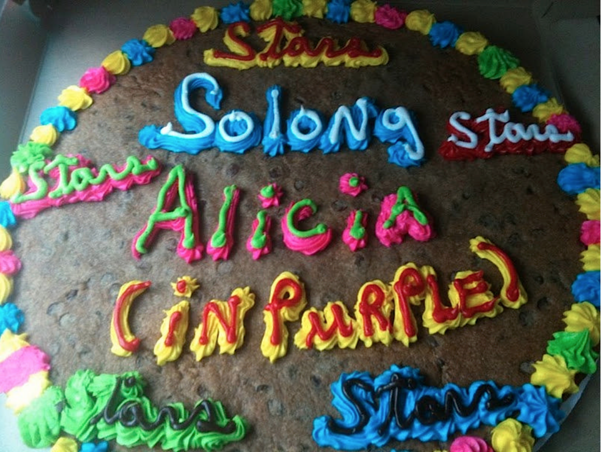We need some way to get on the same page

A productive conversation with supporting artifacts
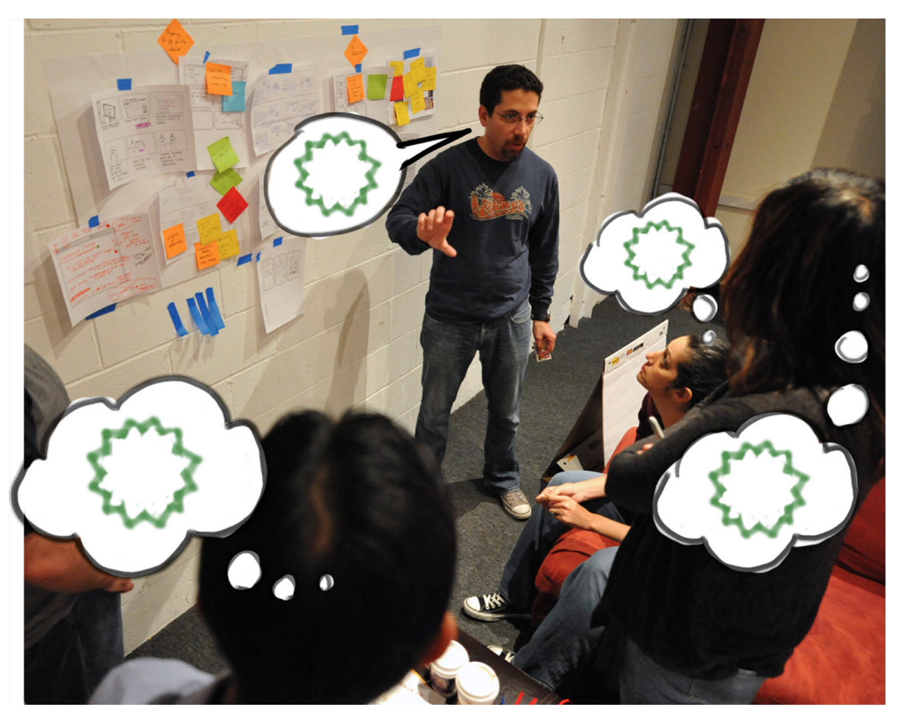A basic change-the-world model
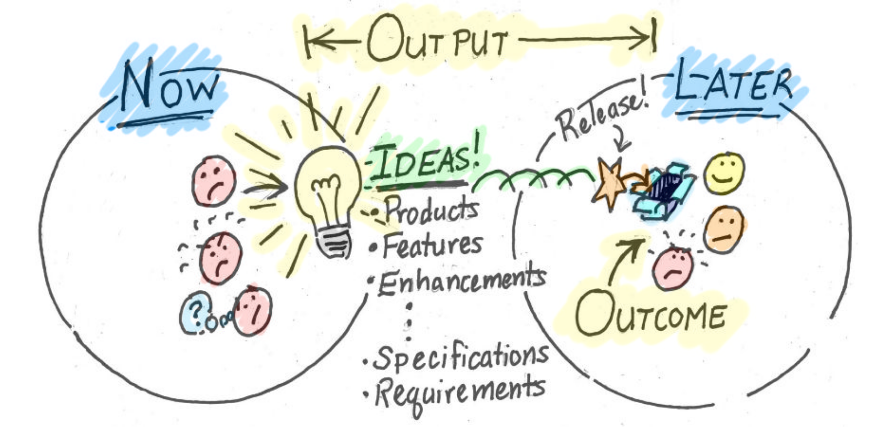A more refined change-the-world model
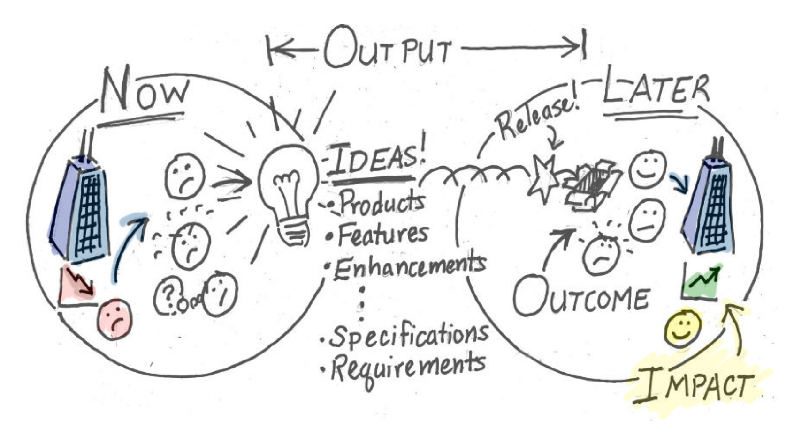A yet more refined change-the-world model
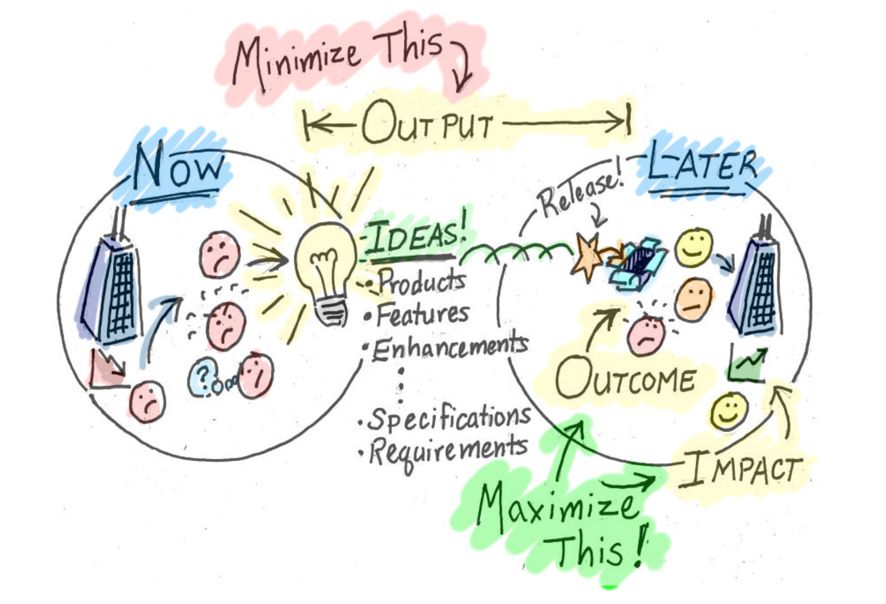An early story map by the author and a collaborator
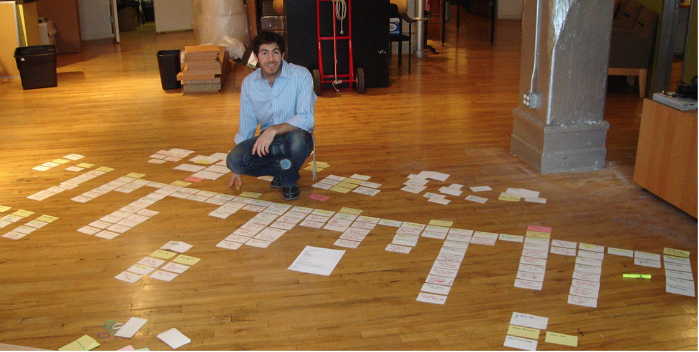Flow of the early story map
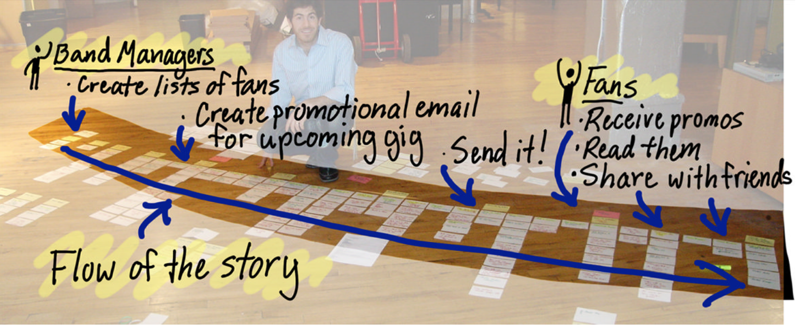One branch of the early story map
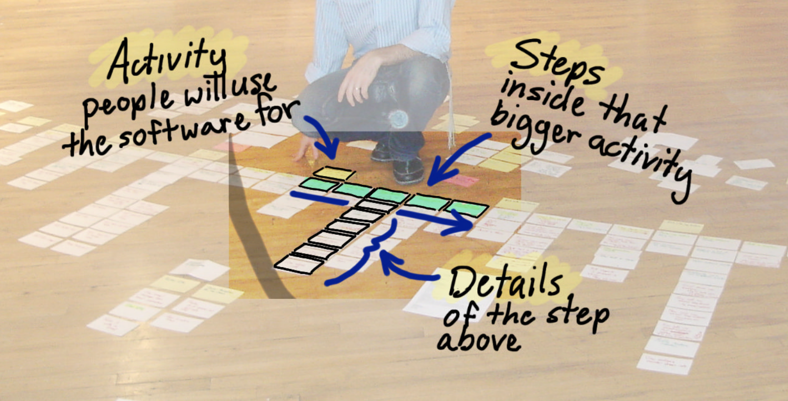Annotated early story map
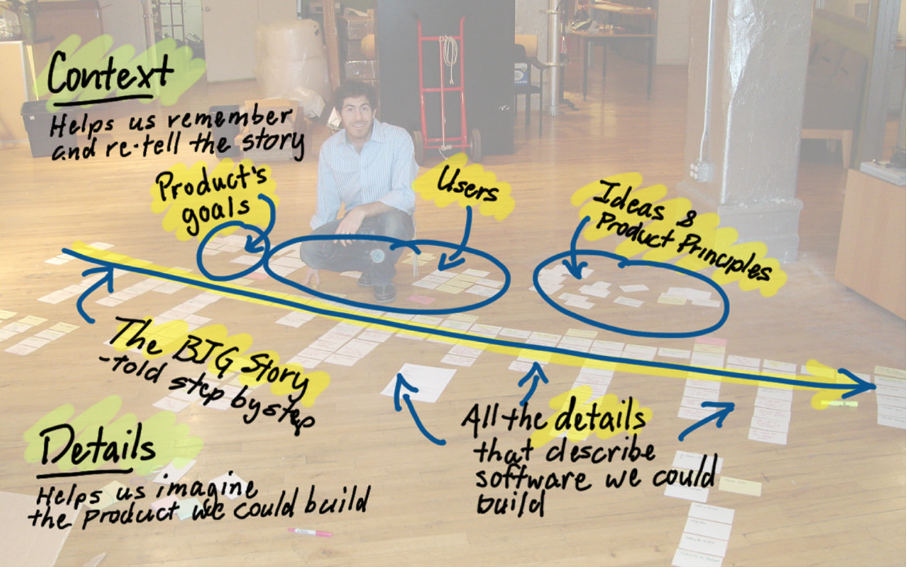THINK - WRITE - EXPLAIN - PLACE
Another story map
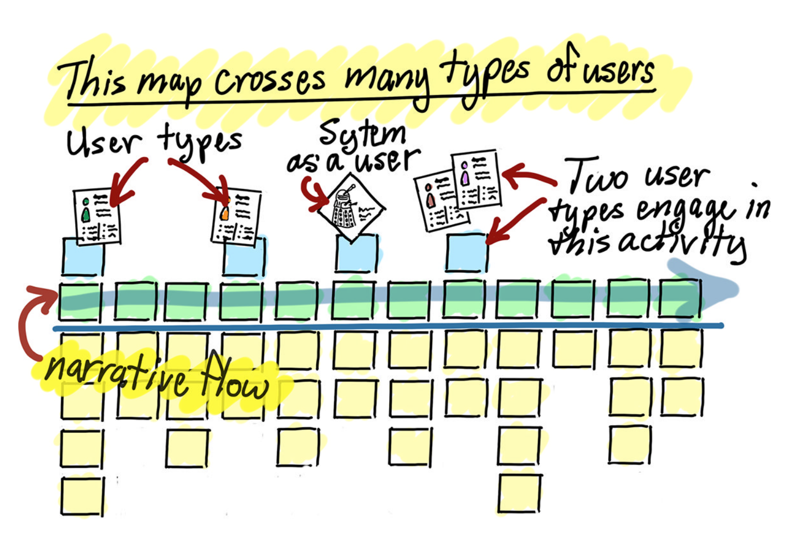Organizing details into three product release slices

Story maps support a conversation that builds shared understanding
- The map is a prop, not an outcome
- Maximize outcomes, minimize output
- Prioritize outcomes, not features
References
Patton, Jeff. 2014. User Story Mapping. Sebastopol, CA: O’Reilly Media.
END
Colophon
This slideshow was produced using quarto
Fonts are League Gothic and Lato